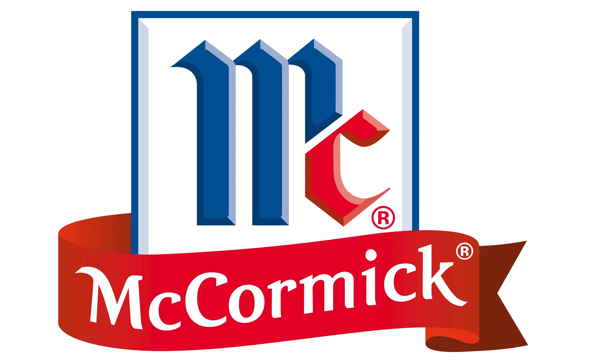
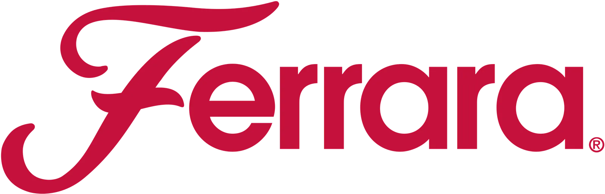
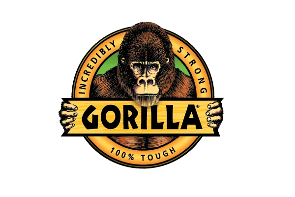

How I Brought QAD Redzone’s Biggest Partnerships to Life Across Web, Video, and Social
Cross-Channel Design for Redzone Partnerships
As Redzone partnered with top-tier brands in the manufacturing and CPG space, I supported their collaborative storytelling through design and video. This case study explores how I helped deliver unified, high-impact creative across web, video, and campaign content.
THE PROBLEM
Redzone’s partner collaborations were high-profile but creatively fragmented. Materials across slides, social, and web lacked consistency, making it difficult to present a unified brand narrative—especially when aligning with partners like Apple or Ferrara.
THE SOLUTION
I developed co-branded presentations, social graphics, web features, and video content that told a cohesive visual story. The assets respected each partner’s brand while reinforcing Redzone’s identity across internal and public-facing materials.
Delivering Consistent Visual Storytelling Across Redzone’s Most High-Profile Collaborations
Redzone’s reach spans hundreds of manufacturing plants, from household brands like Hershey and Tyson to local family-run operations. Every partner deserves to be represented with the same level of care, consistency, and clarity.
This section highlights the design work I led in collaboration with our most recognizable customers. My goal was always to elevate — not overshadow — their story. That meant building creative that felt personal, on-brand, and fully aligned with each company’s tone, whether it was for a social spotlight, co-branded feature, or event asset.
“More than just customers, but community members.”
Every project was rooted in a simple but powerful design philosophy: the partner is the hero, Redzone is the enabler. Through thoughtful type choices, smart layout systems, and visual pacing, I created repeatable frameworks that helped Redzone tell big stories with a consistent brand voice — without ever losing the individuality of the teams we were spotlighting.
Click Visual to Learn More
Visualizing Redzone’s Reach Across Global Production
Real people and products moving through the factory floor every day. To tell that story visually, I created two graphics: a 3D vending machine and a top-down conveyor line, each filled with packaging from actual Redzone customers. From PEZ to Carmex, every item on the shelf or belt represents a frontline team, a success story, a culture of progress.
These visuals were used across global ad placements and social activations, acting as a playful but strategic nod to the real-world impact Redzone powers. It’s design in service of something bigger: recognizing that behind every data point is a snack, a spice jar, or a chocolate bar—and behind those, a person doing their best work.
Click Visual to Learn More
Transforming Partner Relationships into Scroll-Stopping Video Stories
Behind every metric is a person. That belief shaped the video content I created for Redzone — shifting the spotlight away from product features and towards the stories of the people using the software every day.
These weren’t scripted testimonials. They were real moments with real workers — from packaging leads and shift supervisors to maintenance techs — speaking in their own words about what Redzone helped them achieve. I helped concept, script, and shape the visual language of these stories, making sure they felt less like corporate PR and more like short-form stories.
Many of these narrative-driven stories were captured on-site or in close partnership with our customer success team, ensuring every message aligned with what mattered most to that plant. Some videos went further — spotlighting frontline transformation, generational impact, or personal growth in leadership roles. These weren’t just about what Redzone does — they were about how it feels to use it.
Click a Video to Watch
Supporting Authenticity and Tone by Capturing the Heart of the Frontline
When it came to photography, my goal was to tell a story in a single frame — to capture pride, momentum, and the humanity behind manufacturing.
I directed and captured original photography across customer sites and Redzone events, creating a library of images that showcased more than just process — they showed people in their element. Every image reinforced our brand’s shift toward authenticity and emotional resonance.
These photos supported everything from ad campaigns and customer success stories to web and social use. But more importantly, they helped build Redzone’s visual voice: one that said, “We see you. We’re with you. And your work matters.”
I wanted to make sure that most of these works highlighted that real change starts with real people. And when you’re building a brand rooted in trust, showing the frontline matters just as much as showing the software.